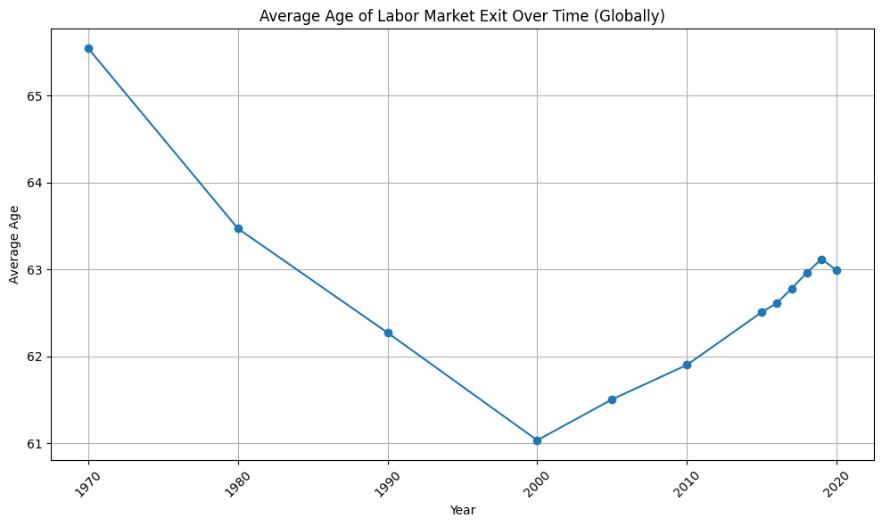

Exploratory analysis of effective labor-market exit ages across 53 countries and both genders, spanning six decades (1970s–2020s), to see how retirement norms diverge by geography and gender.
PandasMatplotlibSeabornEDA
1,175records, zero missing values
62.6 yrsglobal average exit age
63.5 / 61.8men vs women, avg (yrs)
68.9 / 58.2Indonesia (highest) vs Saudi Arabia (lowest)
Key findings
The global average effective retirement age across the dataset is 62.6 years, with men exiting later (63.5 yrs avg) than women (61.8 yrs avg).
Retirement ages have been trending down: the 1970 average was 66.2 (men) / 64.8 (women), several years above today's figures.
Indonesia has the highest national average at 68.9 years (range 63.9–71.3), while Saudi Arabia has the lowest at 58.2 years (low of 51.1).
The spread between countries is wide enough that region/policy (state pension age, informal-sector participation) likely dominates over any single global trend.
Charts

Average effective exit age by decade, men vs women